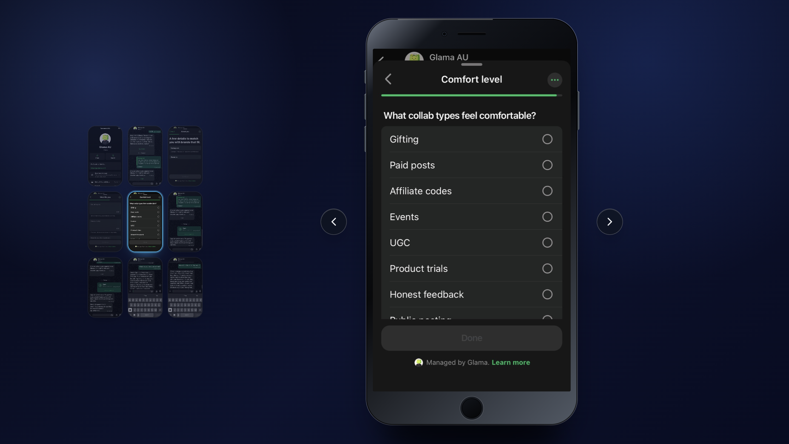
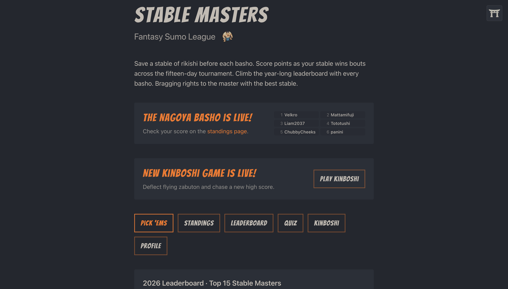
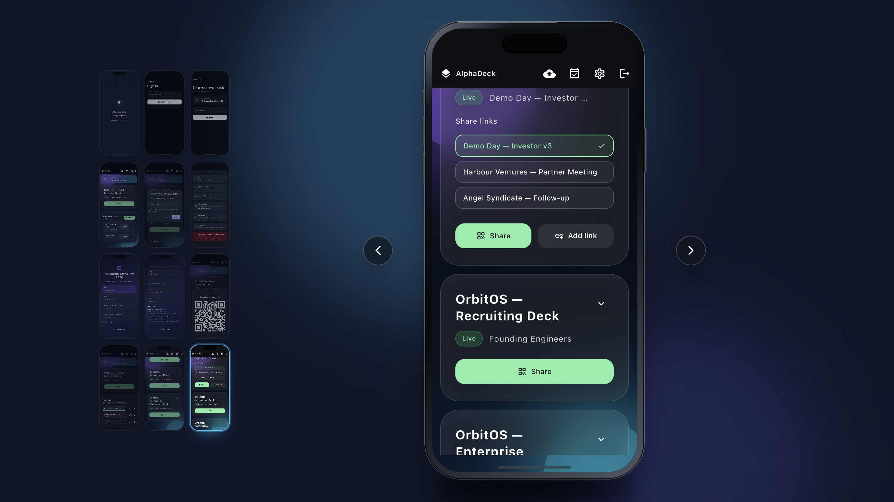
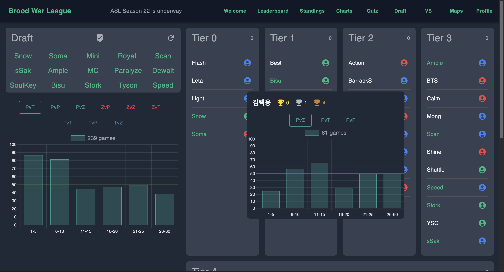

Glama
An AI agent that orchestrates brand campaigns through WhatsApp, surfacing relevant opportunities to creators.

Spencer Wightman
Product · Design · Engineering
An AI agent that orchestrates brand campaigns through WhatsApp, surfacing relevant opportunities to creators.

Fantasy sumo shaped around the professional calendar, from drafting and live standings to year-long competition.

A living networking deck for events, combining branded attendee content, engagement signals and follow-up in one product.

A drafting and competition platform that makes dense StarCraft data clear without stripping away its depth. Read the build note
